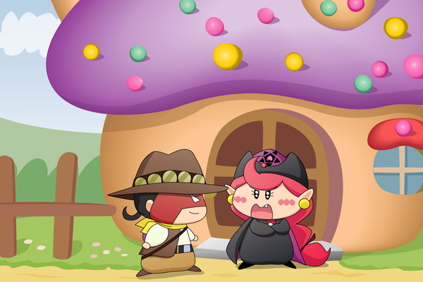

アクミ「何だよ。
お前から作戦を持ちかけるなんて珍しいじゃん。
これでたいしたことない作戦だったらただじゃおかないよ！
っていうか、何であたいの家が分かるのさ！？」
ラット「こんな毒々しい家に住んでいるのはアクミぐらいしか
いないからな」
アクミ「毒々しくて悪かったな！」
ふと思い立って、アクミとラットを描いてみました（特にストーリーは無しです^^;）。ごおるでんの頃、アクミとラットは、全然似合わないのどかな風景の中でいろいろな作戦を練っていたのでしょうか。
そしてこの家・・・。６７話「なよなよなようせい」の１シーンを見ながら描きましたが、まさにアクミにぴったりな家ですね。見た目は完全に毒キノコです。ミルモたちと戦った後、疲れた体で家に帰ってきては眠るアクミの姿を想像するとかわいいなぁ。
(2010/10/20)